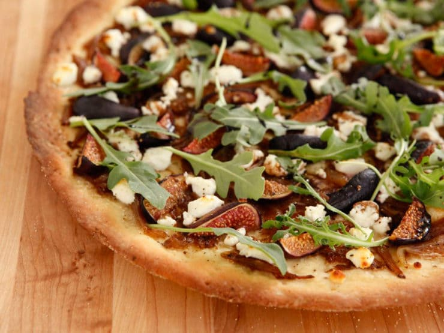

Fig and Goat Cheese Pizza

Description
1/3 cup warm water (not hot!)
1 tsp sugar, honey or agave will also work well
1 tsp active dry yeast
1 cup all purpose flour
1 tsp kosher salt
1 tbsp olive oil, plus more for brushing onto crust
1 medium onion, sliced
1/4 cup water
1 tbsp olive oil
1/2 tsp kosher salt
1 cup fresh figs, sliced into sixths
1/2 cup fresh arugula
3 oz goat cheese
Salt
Freshly ground black pepper
Corn meal